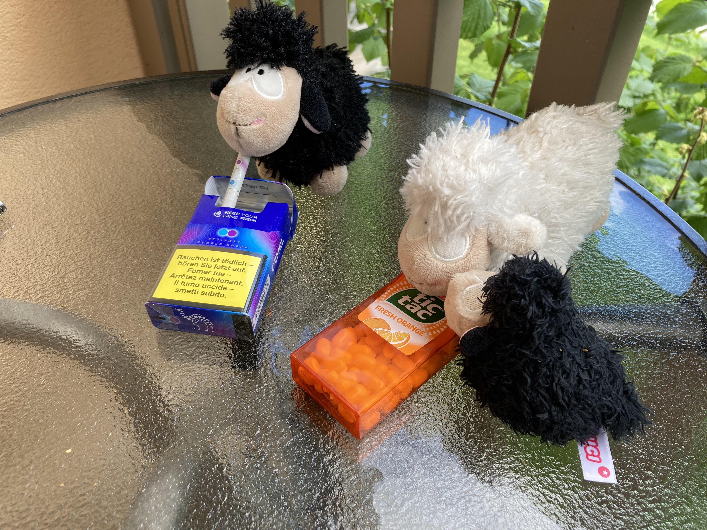
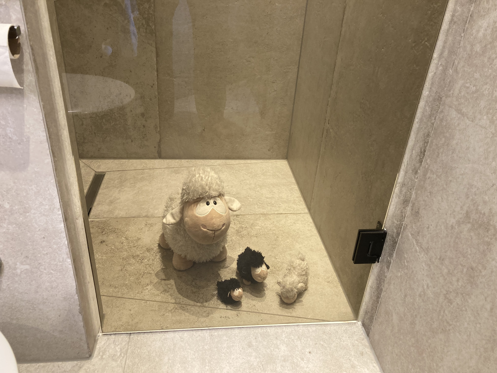

The defendant is alleged to have committed a breach of the duty of supervision. Despite being responsible for the safety and conduct of the minor/individual in question, the defendant failed to exercise reasonable care and oversight. As a direct result of this negligent supervision, the plaintiff sustained damages/injuries that could have been prevented had proper monitoring been maintained."


Based on the evidence presented, the Prosecution finds the defendant guilty of Breach of Duty of Supervision. The defendant failed to exercise the required level of oversight, resulting in the incident documented on 09.05.2026.
The Prosecution requests that the Court impose a total financial penalty as follows:
Given the prompt intervention and the punishment already imposed in accordance with Evidence 3 — including professional assistance from an adult sheep — the defendants are requesting that the case be dismissed.
Judge Your Wool-ness Fleece ruled in favor of the defendant and acquitted her of all charges and fines.
Herding baby sheep is a labor-intensive task that requires a great deal of skill. Even the best shepherds are not 100% capable of handling crafty baby sheep. The shepherds’ actions upon discovering the offense were correct (Evidence 3) and are supported by the judge.
However, Judge Your Wool-ness Fleece asks the shepherds to continue keeping a watchful eye on the baby sheep in their care.